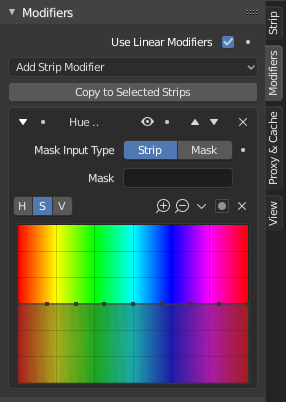

修改器面板¶
参考
- 面板

修改器用于对图像进行调整，如对比度，亮度，饱和度，色彩平衡和应用遮罩。
你可以将这些修改器直接添加到选定的片段上，也可以在“调整图层”效果片段中使用它，这允许你将这些修改器同时应用到多个片段上。
- 使用线性修改器
计算线性空间中的修改器而不是序列空间。
- 复制到选定的片段
允许你将修改器复制到选定的片段。这有两种方法来实现，你可以替换旧的修改器或追加/添加到以前的修改器。
常规选项¶
每个修改器顶部都有几个按钮：
- 禁用(眼睛图标)
禁用修改器。用于比较图像，非常有用，需要/无需修改图像。
- 移动(上/下箭头图标)
接下来的两个按钮用于更改堆栈中修改器的位置。
- 移除
X 交叉是从堆栈中删除修改器。
输入遮罩类型¶
- 片段
使用它可以在整个图像上应用修改，或者通过在“遮罩”选择菜单中选择它来使用另一个片段的图像(带有Alpha通道)来遮罩修改器(以及仅此修改器)。
- 遮罩
这使你可以选择在遮罩编辑器中创建的遮罩，该遮罩将限制对遮罩图像区域的修改。
类型¶
目前，支持以下修改器：
- 色彩平衡
色彩平衡调整，通过提升，伽马和增益。
该修改器与 色彩平衡节点 的作用相同。
- 曲线
颜色和RGB曲线。
该修改器与 曲线节点 的作用相同。
- 色相校正
HSV多点曲线。
该修改器与 曲线节点 的作用相同。
- 亮度 / 对比度
调整修改器输入的亮度和对比度。
- 遮罩
用它来遮罩下面堆栈中的其他修改器。
例如，要仅校正图像的某个区域的亮度，可以通过在堆栈中 “明亮/对比度”修改器之前放置“遮罩”修改器来过滤它。你可以选择使用在“遮罩”编辑器中创建的遮罩，或者使用另一个片段作为遮罩(该片段的图像必须具有Alpha通道)。该遮罩将应用于堆栈中其下方的所有其他修改器。
- 白平衡
通过选择白色来用它来调节白平衡。
- 色调映射
用于将一组颜色映射到另一组颜色，以便在具有更有限的动态范围的媒介中接近高动态范围图像的外观。
该修改器与 色调映射节点 的作用相同。